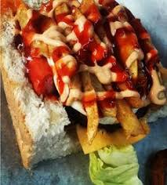

Kota

Description
KOTA
a hollowed out quarter loaf of bread and filled with a variety of ingredients,
often potato chips, sausage, egg, beef patty, cheese, polony and atchar. The name
kota, used in areas such as Soweto and Johannesburg, is derived from the English
word quarter, referring to the size of the bread loaf.
Ingredients
- Sunflower or vegetable, for frying
- 6 large potatoes, peeled and cut into chips
- 2 whole white loaves, cut into quarters
- 60 ml mayonnaise
- 15 ml tomato sauce
- 4 Russians, sliced and fried
- 125 ml hot atchaar
- 4 soft fried eggs, to serve
- extra slap chips, to serve
Steps
-
Heat the oil in a medium pot over medium to high heat.
Gently place the chips into the oil and fry for 10-12 minutes
until golden and crispy. Once cooked, remove the chips from the
oil and drain on absorbent kitchen paper.
-
Using the two quarter ends of bread, cut a hollow “window” in the front and scoop out the inside of the bread.
-
Toast the bread in the oven for 5 minutes.
-
In a small bowl, combine the mayonnaise and tomato sauce and mix well.
-
To assemble the Breakfast Potato Kota: Drizzle some sauce into the bottom of the bread,
add some chips, followed by some sliced Russians and some atchaar. Repeat the process until all ingredients have been used.
-
Place a soft fried egg on top and a final drizzle of sauce.